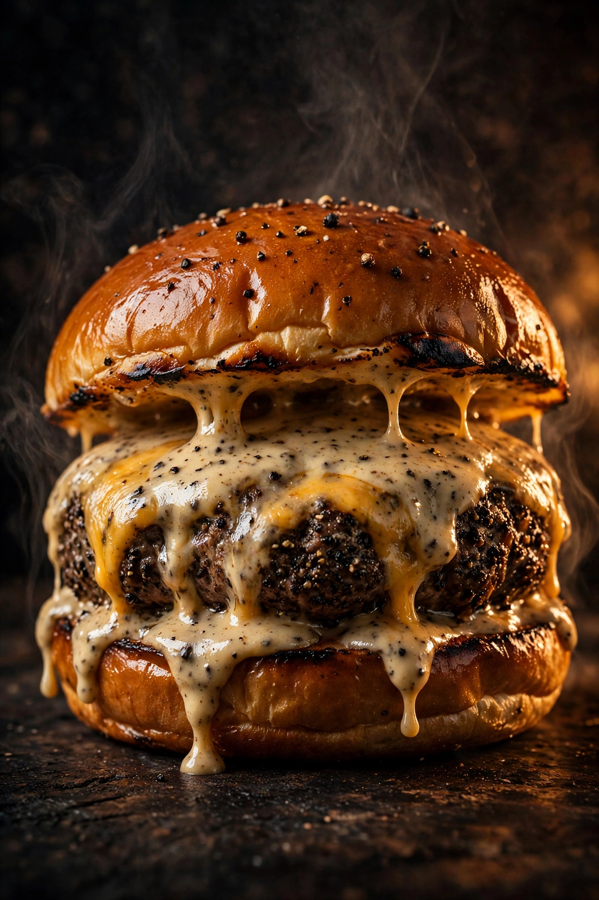
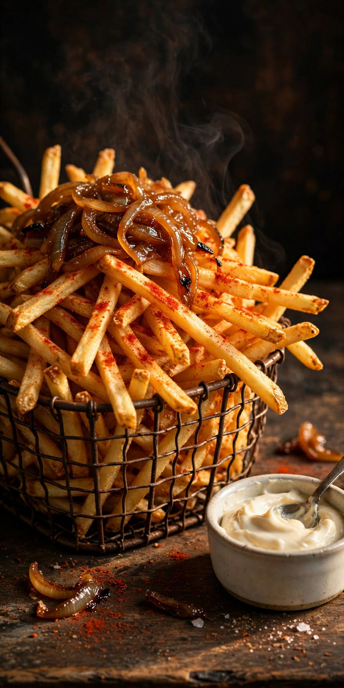
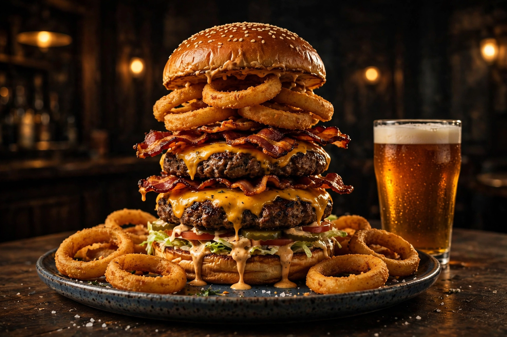
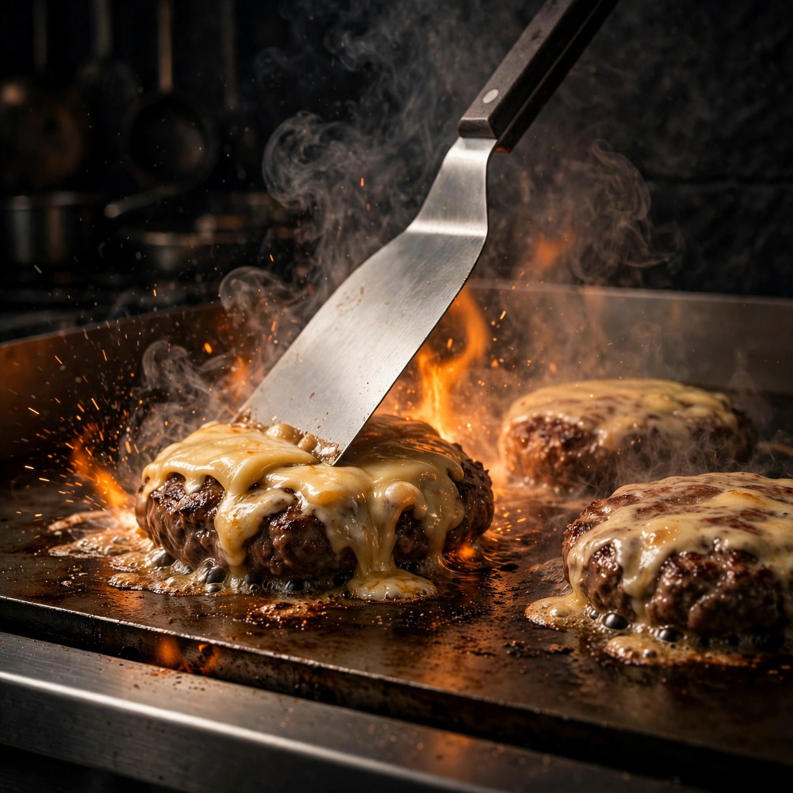
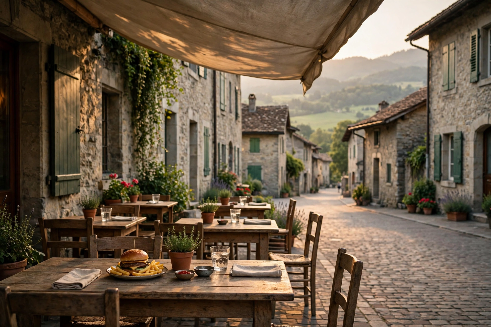

Sergent Jack Pepper
Le signature de la maison : un steak poivré, une sauce qui a fait sa réputation, et les frites maison à côté. En version maxi pour les grandes faims.
On se fait un Sergent Jack Pepper ?
À deux pas de la place Pestalozzi, le Double R grille des burgers sans compromis : viande des fermes environnantes, pain de la boulangerie du coin, fromages fondus d’une laiterie près d’Yverdon, et une sauce maison sur chacun.
Petite salle, grande réputation : la réservation est conseillée.
Ceux qui reviennent dans les avis, encore et encore : le poivré, les frites, l’énorme et le feu de la grille.

Le signature de la maison : un steak poivré, une sauce qui a fait sa réputation, et les frites maison à côté. En version maxi pour les grandes faims.

Fines, dorées, relevées au paprika et aux oignons caramélisés à la bière. Les avis en parlent presque autant que des burgers.

Le géant de la carte. Les habitués le recommandent « pour mourir de bonheur » : à partager, ou pas.

Steaks grillés à la commande, fromages fondus d’une laiterie près d’Yverdon, pain frais de la boulangerie du coin.
L’autre nom que les habitués citent avec le Jack Pepper. Si vous hésitez, c’est celui-là.
« Le meilleur burger que j’ai mangé de toute ma vie », dit un avis. Rien de moins.
Repéré sur les photos des clients : rien que le nom donne le ton de la maison.
Parce qu’un bon bar à burgers pense à tout le monde : la version végétarienne est bien à la carte.

Sans chichi, généreux, un peu décalé : c’est ce que les avis retiennent.
Rue du Collège, à la lisière de la vieille ville, le Double R fait une chose, et il la fait sans compromis : des burgers. La viande vient des fermes environnantes, les légumes sont cultivés dans la région, le pain est préparé par une boulangerie bien connue du coin et les fromages fondus arrivent d’une laiterie située non loin d’Yverdon.
Le reste se lit dans les avis : des habitués qui reviennent depuis plus de dix ans, des frites maison au paprika et aux oignons caramélisés à la bière, une sauce maison sur chaque burger, et un service rapide qui a le sourire. Le théâtre de l’Échandole, lui, tranche : « les meilleurs burgers d’Yverdon ».
Le nom ? Un clin d’œil des connaisseurs au Double R Diner de Twin Peaks, la série culte de David Lynch. Les burgers portent des noms du même esprit (Sergent Jack Pepper, Mastodonte, Mig Bach, Flat Earth), et la salle garde un air rétro et décalé que les clients adorent.
Plus de 960 avis Google, et des habitués fidèles depuis plus de dix ans : la réputation du Double R s’est faite au bouche-à-oreille.
Viande des fermes environnantes, légumes de la région, pain de la boulangerie du coin, fromages d’une laiterie près d’Yverdon.
Une ruelle calme à la lisière de la vieille ville, des tables ombragées et le Jura au loin : les burgers se dégustent aussi dehors.
Assiette pour les enfants, portions généreuses et prix doux pour la Suisse : les avis saluent un accueil sincèrement chaleureux.
Pas de commande en ligne : ici, tout passe par un coup de fil, comme dans un vrai diner.
Parcourez la carte ci-dessus et repérez votre nom préféré.
Un coup de fil suffit : on vous dit quand c’est prêt.
Votre burger vous attend rue du Collège 4, chaud et généreux.
La salle est petite et les habitués nombreux : la maison conseille de réserver, surtout le soir et le week-end. Le même numéro sert pour la terrasse dès les beaux jours.
Double R
Rue du Collège 4
1400 Yverdon-les-Bains
Téléphone : +41 79 464 77 95
E-mail : ledoubler@icloud.com
| Mardi à samedi · midi | 11h00 - 13h30 |
|---|---|
| Mardi à samedi · soir | 18h00 - 21h30 |
| Dimanche et lundi | Fermé |
Horaires de cuisine selon la brochure régionale (nov. 2026). Certains annuaires indiquent un service continu de 11h00 à 23h00 : en cas de doute, un coup de fil ou la page Facebook confirme l’horaire du jour.
Sur place dans la petite salle ou en terrasse, et tout est aussi à emporter.
Gare d’Yverdon-les-Bains, à moins de cinq minutes à pied, comme la place Pestalozzi et la vieille ville.
Rue du Collège, une ruelle calme à la lisière de la vieille ville : la terrasse y guette le soleil, avec le Jura au loin.